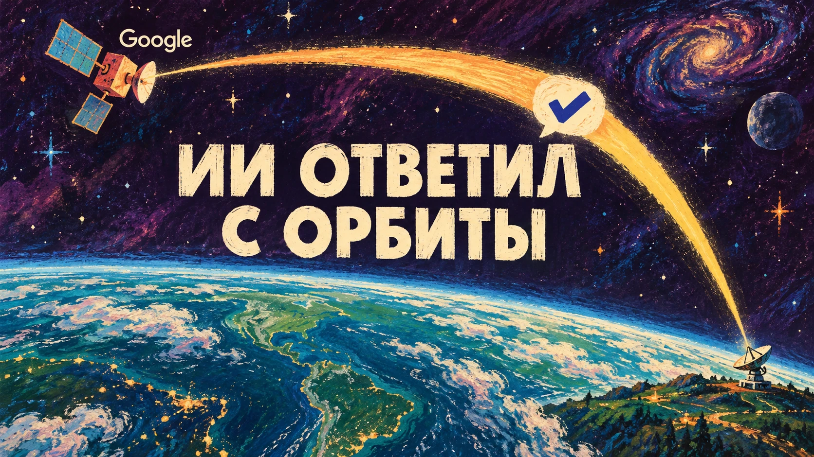

Google отправила первый ИИ-спутник на ракете Маска, а для большого запуска выбрала его конкурента — Джеффа Безоса.
19 ноября Google и Blue Origin подписали соглашение: тяжёлая ракета New Glenn доставит на орбиту несколько вычислительных спутников проекта Project Suncatcher. Запуск намечен на первый квартал 2029 года.
Каждый аппарат по вычислительной мощности будет сопоставим с целой стойкой серверов обычного дата-центра.
Google исследует возможность перенести часть ИИ-вычислений в космос. Спутники оснастят фирменными процессорами TPU, предназначенными для работы нейросетей. Питаться они будут от солнечных батарей.
Для этого выбрали солнечно-синхронную орбиту, на которой аппараты получают солнечный свет почти непрерывно.
Маск уже помог Google освоиться в космосе
Первый спутник Project Suncatcher отправился на орбиту 1 октября на ракете SpaceX. Аппарат создали совместно с компанией Planet для испытания ИИ-процессоров в космических условиях.
И эксперимент уже принёс результат.
30 октября Google сообщила, что на борту успешно запустили модель Gemma 4. Инженеры отправили ей запрос с Земли, нейросеть сочинила хокку о космосе, а спутник передал стихотворение обратно.

Теперь исследователи проверяют работу процессоров при радиационном облучении и температурных нагрузках. В космосе отвести тепло от мощных чипов значительно сложнее, чем в обычном дата-центре.
Следующий эксперимент Google запланировала на 2027 год: два спутника должны испытать совместную работу через соединение между ними.
А на 2029-й уже заказана тяжёлая ракета, способная вывести сразу несколько вычислительных аппаратов. Так Project Suncatcher постепенно переходит от испытания отдельного процессора к строительству орбитальной вычислительной сети.